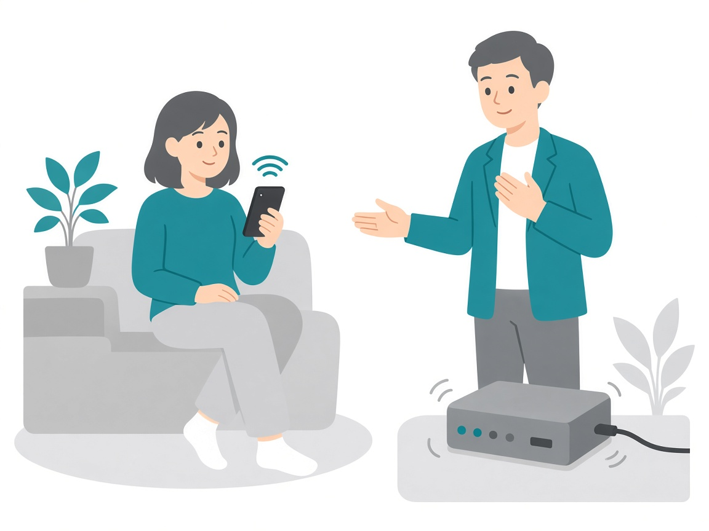

1
「今のネット速度で特に困ってない」
狙い：無理に変えなくてよいと同意 → 耐久年数 → 無償交換の機会へ
トーク本文
そうですよね、今の速度で困っていなければ、わざわざ変える必要はないと思います。 ただ、モデムも家電製品と同じで、一般的に4〜5年ほどが耐久年数と言われています。もし3年近くお使いでしたら、そろそろ交換を考えてもいい時期です。 今回ご案内しているモデムは、今お使いのものより最大3倍ほど高速なタイプで、購入すると5万円相当のものですが、今回は無償で交換できます。 せっかくなので、周りの皆さんと一緒にこの機会に交換しておきませんか？
ポイント
- まず「変えなくてよい」に同意し、防衛反応を下げる
- 家電の耐久年数で“交換時期”の感覚を共有する
- 数値は実条件確認後のみ。最後は「一緒にこの機会に」で柔らかく着地